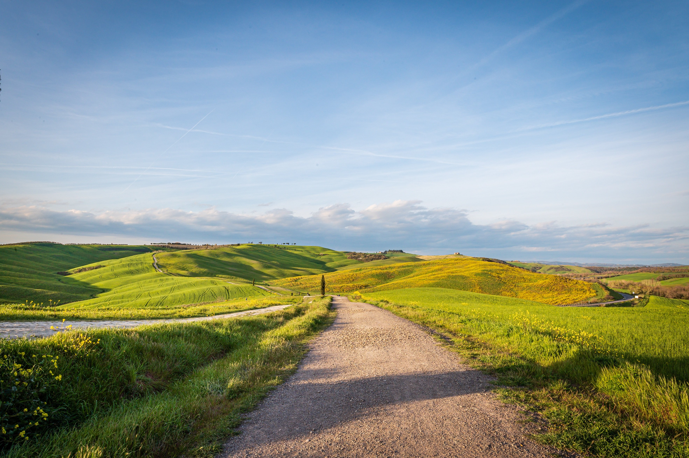

Layer agrifotovoltaico
Mappatura di terreni disponibili per analisi territoriali legate alla localizzazione di impianti fotovoltaici.
VisualizzaUno strumento di analisi e visualizzazione territoriale a supporto della filiera agroalimentare del Roero.
La piattaforma MOR raccoglie e organizza in ambiente WebGIS i principali dati territoriali. L'applicativo consente di esplorare, in modo semplice e integrato, le dinamiche della filiera ortofrutticola, i collegamenti con il sistema turistico locale e la localizzazione di terreni e coltivi per analisi territoriali.

Sezione infografica dedicata a una lettura sintetica del mercato chiuso, mantenendo il contenuto visuale fornito e integrandolo nella nuova identità grafica del portale.
La piattaforma è organizzata in layer tematici che rappresentano dataset territoriali. Ogni layer consente una lettura specifica del sistema locale e contribuisce a una visione d'insieme del Mercato Ortofrutticolo del Roero.
Mappatura di terreni disponibili per analisi territoriali legate alla localizzazione di impianti fotovoltaici.
Visualizza
Visualizzazione dei flussi storici dei prodotti ortofrutticoli tra comuni, organizzati per origine e destinazione.
Visualizza
Individuazione delle aree in cui la filiera agricola si interseca con le filiere turistiche del territorio.
Visualizza